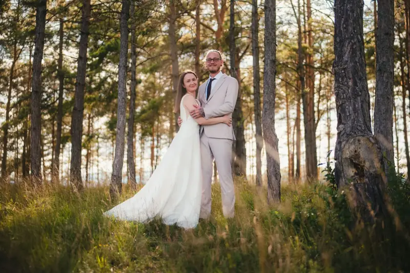
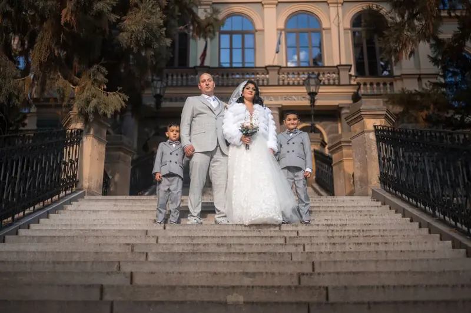
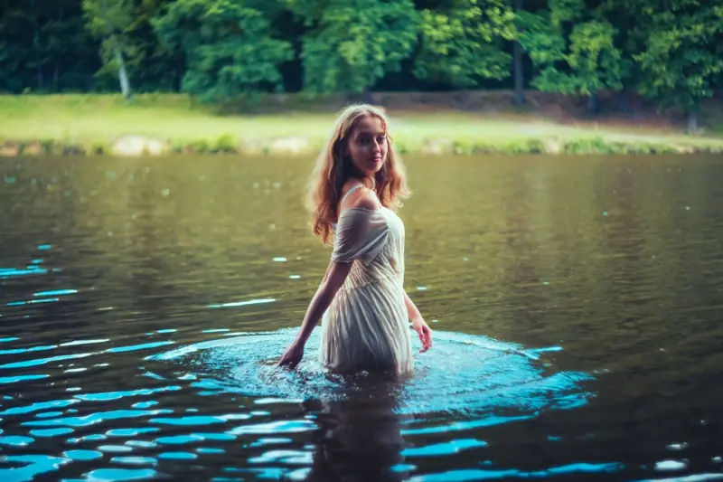
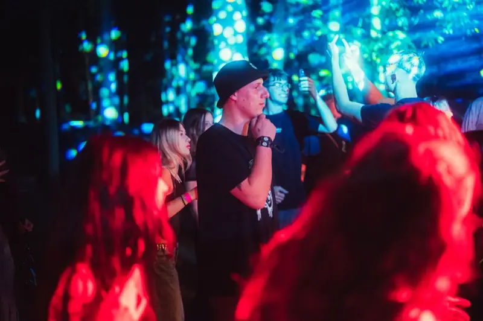
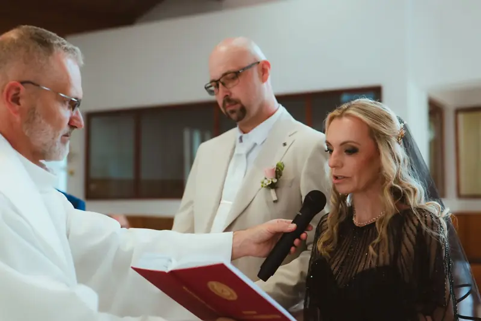
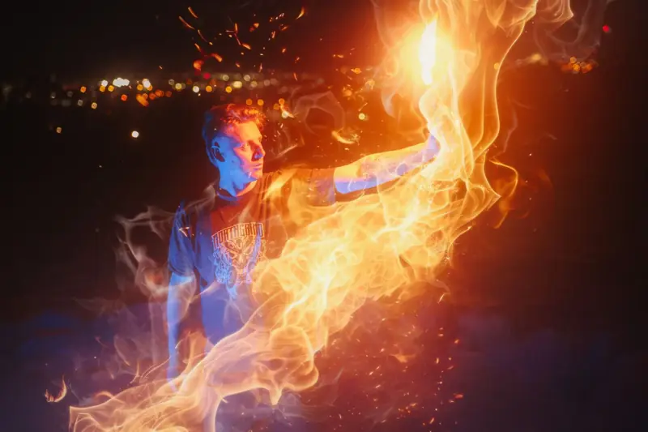

Fotograf a kameraman pre Trenčín
Z Prievidze som v Trenčíne približne za hodinu. Fotím a natáčam svadby, firemné akcie, koncerty aj hudobné klipy, od prvej porady až po hotový film.
- 50+ fotení a natáčaní
- 24 h odpoveď na každú správu
- 2 kolá úprav v cene






Foto a video v Trenčíne
Trenčín je mesto s hradom nad hlavou, živým námestím a nábrežím Váhu. Na svadbách aj eventoch preto ľahko spojím mestskú energiu s pokojnejšími zábermi pri vode alebo v parku.
Pre kapely a interpretov z Trenčína pripravím všetko k vydaniu skladby: videoklip, fotky do médií aj obal skladby. Všetko v jednom štýle, aby ste na Spotify, Instagrame aj plagáte vyzerali ako jedna značka.
Kde sa v Trenčíne pekne fotí
- Trenčiansky hrad a hradné schodyvýrazná kulisa pre portréty aj videoklipy
- Mierové námestiemestské zábery s hosťami a večerné svetlá
- Nábrežie Váhuotvorený priestor a mäkké svetlo pri západe slnka
- Lesopark Brezinazeleň a súkromie len pár minút od centra
Ceny
- Svadobný filmod €600
- Svadobné fotenie, celý deňod €550
- Balík foto a video (Eternal Frame)od €990
- Aftermovie z akcieod €400
- Fotenie akcie (4 h)€350
- Hudobný videoklipod €500
- Portrétne fotenie (1 h)€150
Presnú cenu vám pošlem po krátkej konzultácii. Termín rezervujem po zaplatení 50 % zálohy. Celý cenník a kalkulačku nájdete na hlavnej stránke.
Časté otázky
Koľko stojí cestovné do Trenčína?
Ak bude potrebné, uvediem ho vopred v ponuke, nie až na faktúre.
Natáčate aj firemné akcie a konferencie?
Áno. Aftermovie, fotky aj krátke vertikálne videá na Reels a TikTok. Pred akciou spolu prejdeme program a momenty, ktoré nesmú chýbať.
Ako ďaleko vopred si mám termín rezervovať?
Svadby ideálne 6 až 12 mesiacov vopred, hlavne víkendy od mája do septembra. Na menšie akcie zvyčajne stačí pár týždňov.
Plánujete niečo v Trenčíne?
Napíšte mi dátum a miesto. Do 24 hodín vám pošlem návrh a cenu.